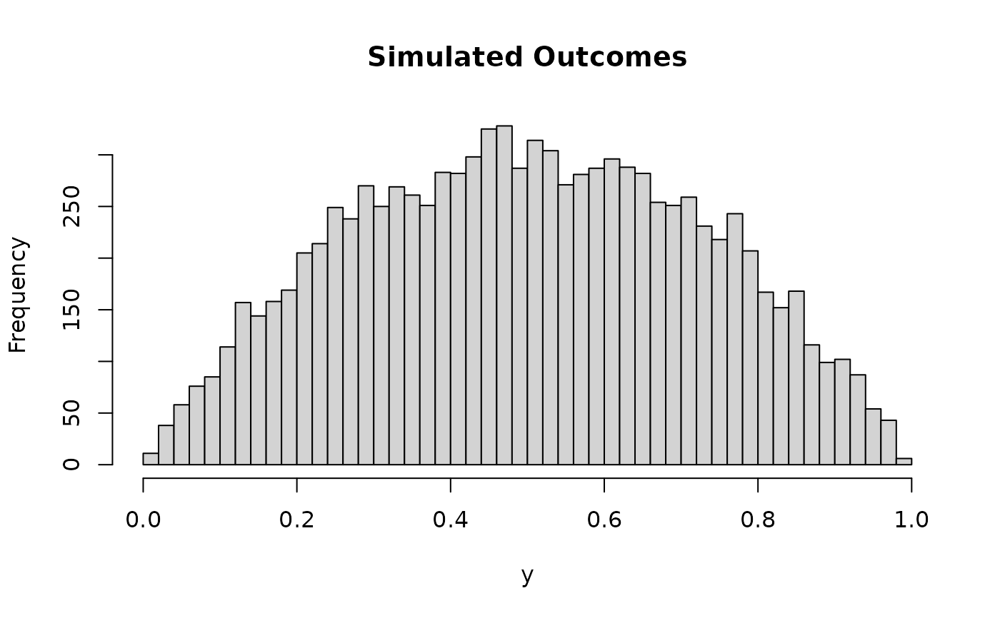

The BEXT model represents subjective ratings as a mixture of a continuous Beta distribution with additional point masses at the extremes (0 and 1). This structure effectively captures common patterns in subjective rating data where respondents often select extreme values at higher rates than would be expected from a Beta distribution alone.
The BeXt model corresponds to a reparametrized ordered beta model (Kubinec, 2023), which was introduced as an appropriate and parsimonious way of describing data commonly observed in psychological science (such as from slider scales). It is defined with a Beta distribution on the interval 0-1 with additional point masses at 0 and 1.
It differs from the Zero-One-Inflated Beta (ZOIB) model in that the ZOIB model has zoi
and coi parameters, directly controlling the likelihood of extreme values. Instead,
BeXt uses pex and bex to define "cutpoints" after which extreme values become likely.
In an ordered beta framework, the boundary probabilities arise through a single underlying
ordering process (the location of the cutpoints on the latent scale). In a ZOIB framework,
the boundaries are more like additional mass points inserted into a beta distribution.
In ordered beta models, the parameters represent a coherent underlying latent process.
Having cutpoints interact with mu better represents a single unified psychological process.
The BEXT model changes the parameterization of the ordered beta model to be more interpretable: Instead of using fixed cutpoints, this version computes the cutpoints from two intuitive parameters:
pex(p-extreme): the overall probability of extreme values (0 or 1).bex(balance-extreme): the balance of extreme probability mass between 0 and 1. Because these parameters directly map onto the expected proportion of responses at the extremes, this approach provides greater flexibility (e.g., in capturing pronounced endpoints: It can adapt to various shapes - such as extreme clustering at zero or one) and intuitive interpretability.
Usage
rbext(n, mu = 0.5, phi = 3, pex = 0.1, bex = 0.5)
dbext(x, mu = 0.5, phi = 3, pex = 0.1, bex = 0.5, log = FALSE)
bext_lpdf_expose()
bext_stanvars()
bext(
link_mu = "logit",
link_phi = "softplus",
link_pex = "logit",
link_bex = "logit"
)
posterior_predict_bext(i, prep, ...)
posterior_epred_bext(prep)
log_lik_bext(i, prep)Arguments
- n
Number of simulated values. Must be a positive integer.
- mu
Mean of the continuous Beta component (between 0 and 1), represents the central tendency of non-extreme values.
- phi
Precision parameter (positive). Note: This corresponds to half of the "typical" precision parameter used in Beta models (internally,
precision = phi * 2is used). This reparametrization meansphi = 1(withmu = 0.5) corresponds to a uniform distribution between 0 and 1 for the Beta component. It facilitates the usage of priors (e.g., on a log-link,log(phi) = 0corresponds to this uniform case).- pex
Overall probability of extreme values (0 or 1).
0 <= pex <= 1.- bex
Balances the extreme probability mass between 0 and 1. If
bex = 0.5, the mass is distributed equally (P(0) = P(1) = pex / 2). Ifbex > 0.5, more mass goes to 0. Ifbex < 0.5, more mass goes to 1. Specifically,P(0) = pex * (1 - bex)andP(1) = pex * bex.- x
Vector of quantiles (values at which to evaluate the density). Must be between 0 and 1, inclusive.
- log
Logical; if TRUE, returns the log-density.
- link_mu, link_phi, link_pex, link_bex
Link functions for the parameters.
- i, prep
For brms' functions to run: index of the observation and a
brmspreparation object.- ...
Additional arguments.
Details
The BeXt model corresponds to a reparametrized ordered beta model.
Instead of defining the left and right cutpoints directly, the BeXt parametrization
uses the overall probability of extreme values (pex) and their balance (bex).
The probability masses at the extremes are determined by:
Probability mass at 0:
P(0) = pex * (1 - bex)Probability mass at 1:
P(1) = pex * bexThe probability of a value falling between 0 and 1 (drawn from the Beta distribution) is1 - pex.
Special cases:
When
pex = 0: Pure Beta distribution with meanmuand precisionphi * 2.When
pex = 1: Pure Bernoulli distribution withP(1) = bex,P(0) = 1-bex.When
bex = 0andpex = 1: All mass at 0.When
bex = 1andpex = 1: All mass at 1.
Psychological Interpretation:
mu: Can be interpreted as the underlying average tendency or preference strength, disregarding extreme "all-or-nothing" responses.phi: Reflects the certainty or consistency of the non-extreme responses. Higherphiindicates responses tightly clustered aroundmu(more certainty), while lowerphi(especiallyphi = 1) suggests more uniform or uncertain responses.pex: Represents the overall tendency towards extreme responding (choosing 0 or 1). This could reflect individual response styles (e.g., acquiescence, yea-saying/nay-saying) or properties of the item itself (e.g., polarizing questions).bex: Indicates the direction of the extreme response bias.bex > 0.5suggests a bias towards the upper anchor (1), whilebex < 0.5suggests a bias towards the lower anchor (0).
References
Kubinec, R. (2023). Ordered beta regression: a parsimonious, well-fitting model for continuous data with lower and upper bounds. Political Analysis, 31(4), 519-536.
Examples
# Simulate data with different parameterizations
x <- rbext(10000, mu = 0.5, phi = 2, pex = 0, bex = 0.5)
hist(x, breaks = 50, main = "Simulated Outcomes", xlab = "y")

x <- seq(0, 1, length.out = 1001)
densities <- dbext(x, mu = 0.5, phi = 5, pex = 0.2, bex = 0.5)
plot(x, densities, type = "l", main = "Density Function", xlab = "y", ylab = "Density")
 # You can expose the lpdf function as follows:
# bext_lpdf <- bext_lpdf_expose()
# bext_lpdf(y = 0.5, mu = 0.6, phi = 10, pex = 0.2, bex = 0.5)
if (FALSE) { # \dontrun{
# Default usage:
family = bext()
# Custom link for phi:
family = bext(link_phi = "log")
} # }
# You can expose the lpdf function as follows:
# bext_lpdf <- bext_lpdf_expose()
# bext_lpdf(y = 0.5, mu = 0.6, phi = 10, pex = 0.2, bex = 0.5)
if (FALSE) { # \dontrun{
# Default usage:
family = bext()
# Custom link for phi:
family = bext(link_phi = "log")
} # }